This manual describes the Deployit GUI. The GUI is used to import packages, perform deployments, view and edit the repository and run reports.
The Deployit Server must be running before accessing the GUI. See the Deployit System Administrator Manual for more information.
See Deployit Reference Manual for background information on Deployit and deployment concepts.
To use the GUI, your system must meet the following requirements:
Before accessing the GUI, make sure the Deployit Server is started. Then start a browser and enter the URL of the Deployit Server (for example, http://deployit:4516).
When you open the GUI, the browser will show a popup window to prompt you for a username and password. Enter your Deployit username and password to log in.
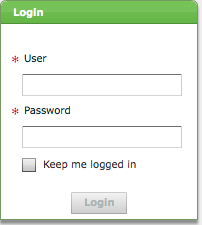
By ticking the "Keep me logged in" checkbox, you will not have to enter your password again to enter the GUI until you explicitly log out. Note that this feature even works across browsers on the same machine. If you have selected "Keep me logged in" in Internet Explorer, you will not be asked for you password when accessing the page with Firefox.
To log out of the GUI, select "Logout" from the Help menu in the upper right-hand corner of the screen.
To access help information while using the GUI, click on the help menu icon in the top-right of the window. This is a button combined with a selection menu with the following options.
docs.xebialabs.com.www.xebialabs.comThe available functionality in the GUI is divided into three sections:
Editor windows use tabs to allow the user to perform multiple tasks in parallel. The tabs will be opened in response to user actions in other parts of the GUI. Tabs can also be closed.
Here's an example of an Editor window with a single tab:
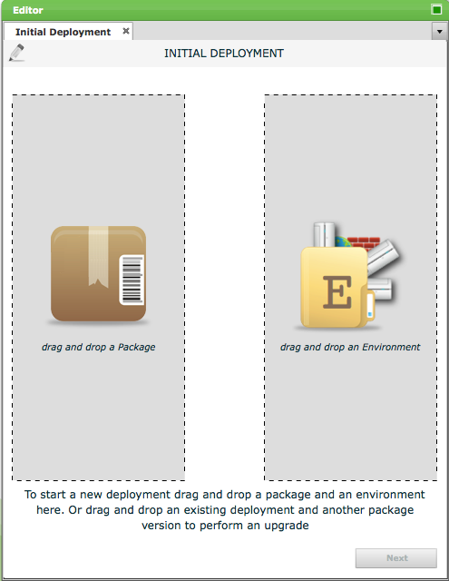
When working on a specific task, the editor window can be maximized so that the most screen real estate can be used. Click on the top right corner of the editor window to maximize it or restore it to its original size.
The following image shows an example of the CI Editor component:
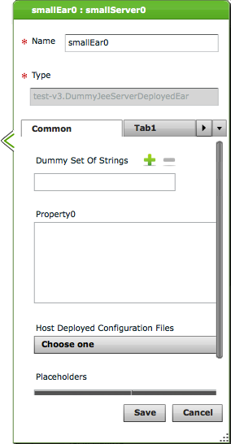
The CI editor component shows the properties of a CI and allows the user to edit them (if permitted by the security system). These include simple properties like strings and integer values, but also more complex properties like name-value pairs and references to other CIs. Some CI properties are not editable in the repository browser once they have been set, such as the file of an artifact CI or the ID of the CI. Using the context menu, uneditable field values can be copied and used elsewhere.
The following image shows an example of the Tree component:
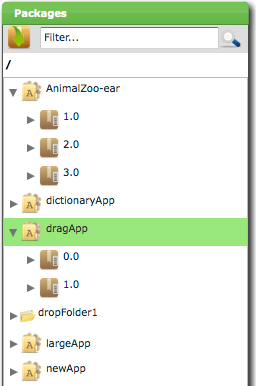
The tree component is a component that is used often in the GUI. It shows a hierarchical view of the Deployit data. Nodes can be expanded or collapsed.
To facilitate installations with large amounts of data, the tree component lazily loads its data. That is, when the scrollbar is pulled down to the bottom, the GUI queries the server for more data. This prevents the GUI from loading all data at once.
Filtering the data in the tree is also possible using the filter field in the top of the tree component. Note that filtering always happens on the top-level nodes in the tree. If you want to filter on a lower level, first narrow the scope of the tree by selecting the node in the tree and selecting Show as Root from the context menu. The tree component includes a breadcrumb that shows all levels of the hierarchy and allows quick access to previous levels.
The Deployit Repository is the database that contains all packages, environments and other CIs. The repository keeps track of this data and all its revisions.
The first step to performing a deployment with Deployit is to import your package into the repository. These are the steps you need to follow:
Start the Import Wizard. To start the Import Wizard, click the Import button on the Package Browser.
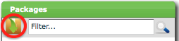
Import the Package. Run through the steps of the import wizard. Import deployment package from server scans for packages in the configured dropbox, which by default is the importablePackages directory from the Deployit installation directory. Import deployment package from URL allows the user to specify a URL to download the package from. Note that you cannot re-import packages.
Close the Import Wizard. Click on the Close button to complete the import procedure.
For more information about the Deployit packaging format, see the Deployit Packaging Manual.
Once the package has been imported, you can deploy it to any of the environments in Deployit. To deploy your package to an environment for the first time, follow these steps:
Start a new deployment. To start a new deployment, click the New Deployment button on the Application Browser:
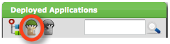
Select the deployment package. Find the package you want to deploy in the Package Browser and drag it into the new deployment tab. The package will be loaded into the Package Box and its contents will be shown. This is an example of the Deployment Tab after selecting a deployment package:
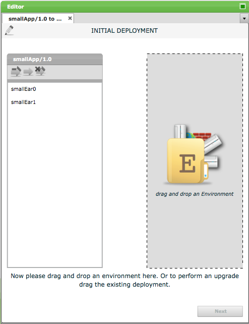
Alternatively, you can select a deployment package in the Package Browser and choose the Deploy option from the context menu.
Select the environment. Find the environment you want to deploy to in the Application Browser and drag it into the new deployment tab. The environment will be loaded into the Environment Box and its contents will be shown. This is an example of the Deployment Tab after selecting an environment:
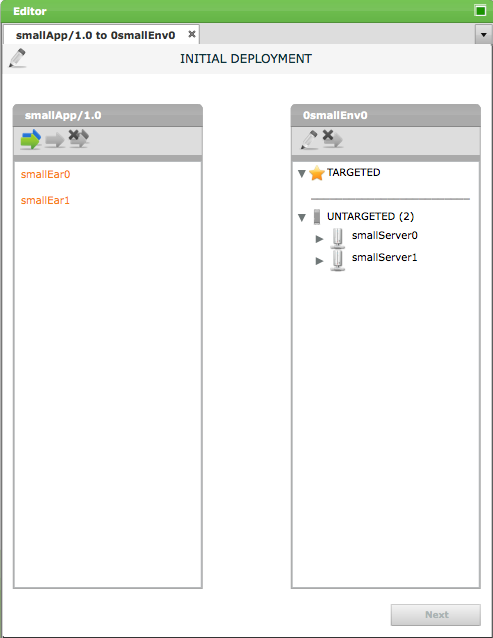
Alternatively, you can select an environment in the Application Browser and select the Deploy to option from the context menu.
Map the deployment package to the environment. Now that Deployit knows which deployment package you want to deploy on which environment, you can configure the way the package members are installed on the targets. To do this, you create deployed items for each of the package members you want to deploy.
There are several ways to do this:
Let Deployit create default deployed items. Deployit can generate default deployed items for each valid combination of a package member and target. The generated deployed items can then be configured manually. There are two ways to do this: either generate default deployed items for all package members or select one or more package members and generate deployed items only for them. You can also remove all deployed items for a package member. The buttons to perform these functions are in the top of the Package Box in the Deployment Configuration Page.
From left to right, the buttons are:
Manually create deployed items. If you want to manually generate a deployed item, drag the package member from the left box to the target on the right. The mouse cursor will indicate whether it is possible to drop the package member and to generate a deployed item. If there are more possible deployed items that can be created, Deployit will display a popup so you can select which one to use. After the deployed item is created, the Deployed Item Configuration Balloon will open, allowing you to configure the deployed item. The balloon can also be opened by using the Edit Deployed Item button in the top of the Environment Box. You can also remove deployed items here.
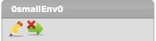
From left to right, the buttons are:
Configure the deployed items. The deployed items may need to be configured before the deployment can be started. To do this, open the Deployed Item Configuration Balloon by double-clicking on a deployed item or use the Edit Deployed Item button in the toolbar. A balloon will open, showing the properties of the deployed item:
The CI properties may be divided into separate tabs. It's possible to enlarge the balloon component by clicking on maximize button of the editor window.
When saving changes in the deployed item, Deployit will validate the data you entered and provide error messages if there are any problems. Some validation errors may be related to properties shown on different tabs.
Generate the steplist. When all of the deployed items are properly configured, proceed with the deployment by clicking on the Next button. Deployit will validate all deployed items and, if they are correct, generate a list of steps needed to perform your deployment. If the deployed items are not configured correctly or completely, Deployit will show an error message and allow you to rectify the situation.
Configure the steplist. The steplist contains all steps that Deployit will execute to perform your deployment. You have the opportunity to review it before starting the deployment. Depending on the user's permissions, the user may be able to edit the steplist. If there are steps that you want to skip, select the step from the list and press the Skip button. This step will not be executed when you run the deployment. Skipped steps can be unskipped by pressing the Unskip button. The steps can be reordered by moving one step at a time in the steplist by way of drag and drop. The steps can be reordered only when the task state is Pending and the user has the permissions to move steps. The deployment can be cancelled by pressing the Cancel button. The deployment task and its associated deployed items will be removed. To navigate back to the Deployment Configuration Page, press the Previous button.
Execute the deployment. Press the Deploy button to start the deployment. Deployit will schedule the deployment for execution. Depending on the load on the Deployit server and its configuration, the deployment may start executing immediately or it may be scheduled for execution as soon as the server has sufficient capacity to do so. In the latter case, the deployment window will show a QUEUED state, indicating the deployment is queued. Press the Cancel button to cancel the deployment before it starts executing.
Once the deployment starts executing, Deployit well run through the steplist sequentially. The log of a step will be shown in the Log Window below the steplist. Select a step by clicking on it to see its log.
When the deployment is being executed, the following scenario's may occur:
A step in the deployment fails. If a step fails to execute successfully, Deployit stops executing the deployment and marks the step as Failed. This allows you to view the step's log output to determine what to do next. The following image shows a failed deployment:
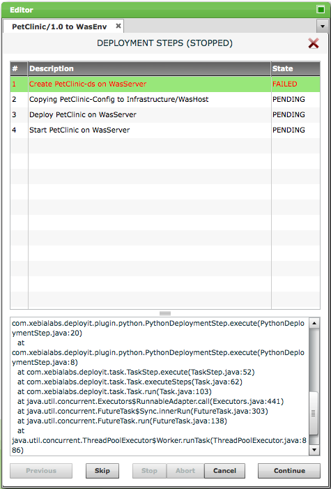
If the error is of a transient nature, the deployment can be restarted with the failed step by pressing the Continue button. If the step is incorrect and should be skipped, select the step, press the Skip button and then continue the deployment with the Continue button. To give up on the deployment altogether, press the Cancel button.
The deployment must be stopped. If you want to gracefully stop a running deployment, press the Stop button. Deployit will wait until the currently executing step is finished and then stop the deployment. The deployment can be continued (Continue button) or cancelled (Cancel button).
The deployment must be aborted. If you want to forcefully abort a running deployment (or if stopping the deployment gracefully is not working, for instance due to a hanging script), press the Abort button. Deployit will attempt to kill the currently executing step and mark it as Failed. The deployment can then be continued starting with the aborted step (Continue button) or cancelled (Cancel button). The aborted step can also be skipped.
The deployment completes successfully.
Complete the deployment. Press the Close button to close the Deployment Tab.
Once you have performed an initial deployment of your package to an environment, upgrading that deployed application is easy. Deployit will take the existing mapping and will try to apply it to the new version.
Start an upgrade. All you have to do is
The order in which you do this is not important.
As an alternative to dragiing-and-dropping, you use the context menu. For packages, right-click and select "Deploy". For deployed app]ications, use the "Upgrade" menu item.
Check the mapping. Deployit will attempt to reuse the deployed items from the initial deployment, including their configuration. If the structure of your package is unchanged and the initial deployment was correct, the reused mappings should suffice and you can continue with the deployment.
If the new package contains a new package member, it will be shown in orange in the left box. You can proceed with the deployment as-is if you do not want to deploy the new package member. Alternatively, create a new deployed item for the package member (see the section Initial Deployment above for details).
If the new package is missing a package member that was in the previous deployment, the deployed item for the missing member will be shown in red in the right box. You can, however, open the deployed item to look at its settings if necessary.
Configure the deployed items. The deployed items will be configured as in the initial deployment. If this configuration needs to be changed, configure the deployed item as described above in Initial Deployment.
From this point on, upgrading is identical to an initial deployment. For more information, see the Initial Deployment section.
To remove the application and all of its components from an environment, you need to undeploy the application. Follow these steps:
Find the deployed application. In the Deployment Screen, find the environment the application is deployed on in your Deployed Application Browser. If there are a lot of environments or applications, use the filter and search capabilities of the browser component.
Start an undeployment. Select the option Undeploy from the context-menu of the deployed application. Deployit will open a new Undeployment Tab, showing a Deployment Steps page. The page shows the steps generated for the undeployment.
Configure the steplist. The steplist contains all steps that Deployit will execute to perform your undeployment. For information on how to configure the steplist, see Initial Deployment.
Execute the undeployment. Deployit will execute each of the steps in the steplist. For more information on executing a steplist, see Initial Deployment.
Complete the deployment. Press the Close button to close the Undeployment Tab.
Deployit stores all of its information in the repository. The Repository screen gives you access to the Configuration Items in the repository, and allows you to edit them manually.
To create a new CI in the repository, do the following:

Create a new CI. The selected CI type will be opened in the CI Editor Tab so you can fill out its properties to create a new CI. Note: the Id field of the CI is a special non-editable property that determines the place of the CI in the repository. For more information about the Id property, see the Deployit Reference Manual.
Save the new CI. Click on the Save button to save the new CI in the repository. Deployit will perform validation on the CI to ensure that all properties have appropriate values. An error message is shown if not.
To modify an existing CI, follow these steps:
To delete an existing CI, follow these steps:
Note that deleting a CI will also delete all nested CIs. For example, by deleting an environment CI, all deployments on that environment will also be deleted. The deployment package that was deployed on the environment, however, will remain under the Applications root node.
Note that you can't recover a deleted CI.
Depending on your environment, deploying the same application to multiple environments may use different settings. With all these differences, it is easy to lose track of what is running where and how it is configured. Deployit's CI comparison feature makes it easy to spot the differences between two or more deployments.
To compare multiple CIs, follow these steps:
Select the reference CI in the Repository Browser. The reference CI is the basis for the comparison, the CI that the other CIs are compared against. Select it in the Repository Browser and select View from the context menu.
Drag comparison CIs into the Comparison Tab. To add more CIs into the comparison, locate them in the Repository Browser and drag them into the Comparison Tab. Deployit will mark the properties that are different in red.
You can only compare CIs that have the same type.
Control tasks are actions that can be performed on middleware or middleware resources. When a control task is invoked, Deployit starts a task that executes the steps associated with the control task. To trigger a control task on a CI in the repository, do the following:
List the Control Tasks for a CI. In the Repository Browser navigate the repository to find the CI for which you want to trigger a control task. Right-click on the item and select Tasks. A submenu will show a list of possible control tasks.
Execute the Control Task on a CI. Select the control task from the list you want to trigger. This will invoke the selected action on the CI.

Deployit contains information on all your environments, infrastructure and deployments. Using the reporting functionality, you can gain insight into the state of your environments and applications. The reports are available to all users of Deployit.
When opening the Reports section for the first time, Deployit will show a high-level overview of your deployment activity.

The dashboard consists of three sections that each give a different view of your deployment history:
The following graphs are displayed on the dashboard:
To refresh the dashboard, press the reload button on the top right corner.
This report shows all applications that were deployed in a certain environment at a particular date. The following is an example of such a report:
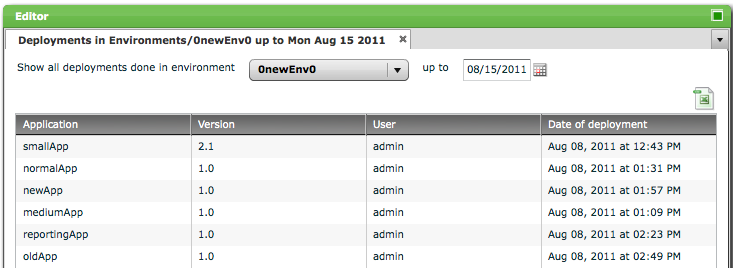
The report shows the following columns:
This report shows deployments done in a given date range. It also allows user to aggregate deployments by selected applications and environments. There are three ways to aggregate the data in the report:
No aggregation. When selecting this option, the report is shows all deployments in the date range in tabular format, without aggregation. This is an example of such a report:
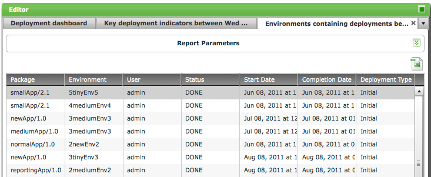
The report shows the following columns:
Aggregated by selected applications. With this option, it is possible to aggregate the data over selected applications, across all application versions. The report can be shown in a grid and a chart view.
In grid view, the report looks like this:
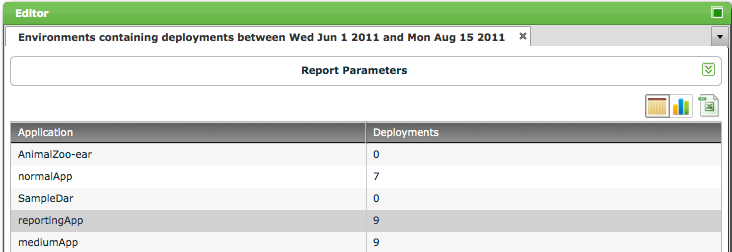
When selecting the chart view, the report is shown as a bar graph, for example:
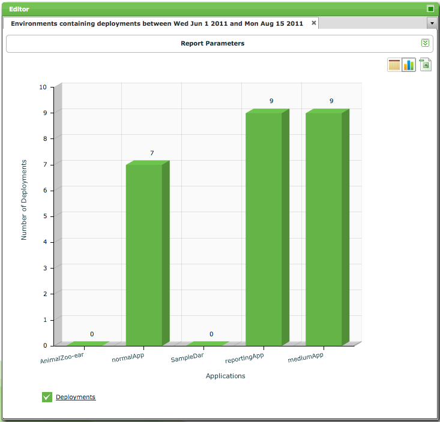
Aggregated by selected environments. With this option, it is possible to aggregate the data over selected environments. The report can be shown in a grid and a chart view.
In grid view, the report looks like this:
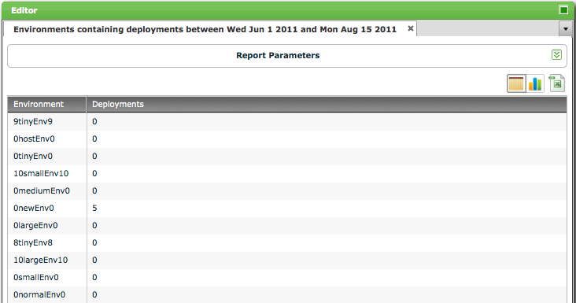
When selecting the chart view, the report is shown as a bar graph, for example:
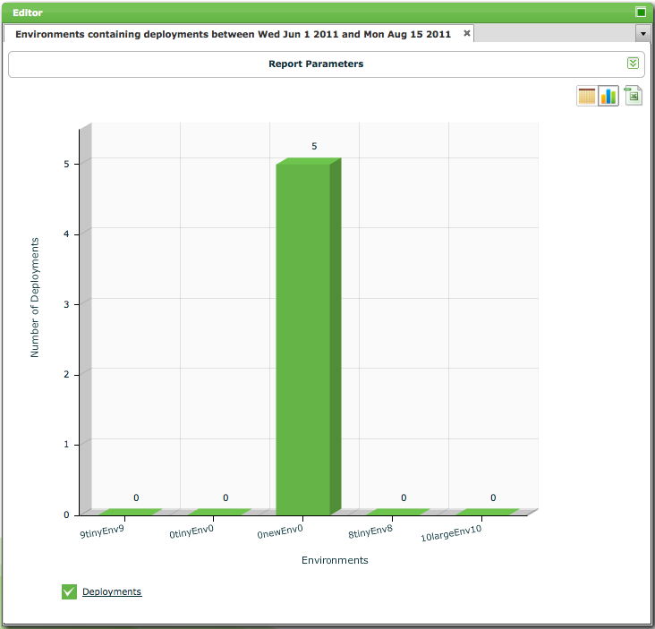
This report shows three indicators describing deployment performance:
The Key Deployment Indicators report can show data aggregated in three ways:
No aggregation. When selecting this option, the report is shows all deployments in the date range in tabular format, without aggregation. This is an example of such a report:
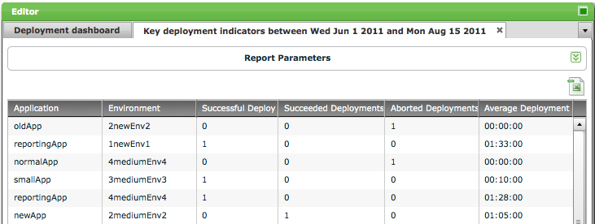
The report shows the following columns:
Aggregated by selected applications. With this option, it is possible to aggregate the data over selected applications, across all application versions. The report can be shown in a grid and a chart view.
In grid view, the report looks like this:
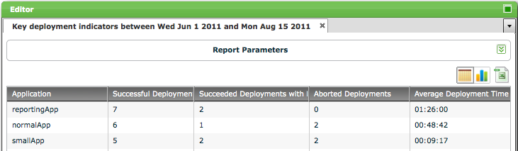
The report shows the following columns:
When selecting the chart view, the report is shown as a bar graph, for example:
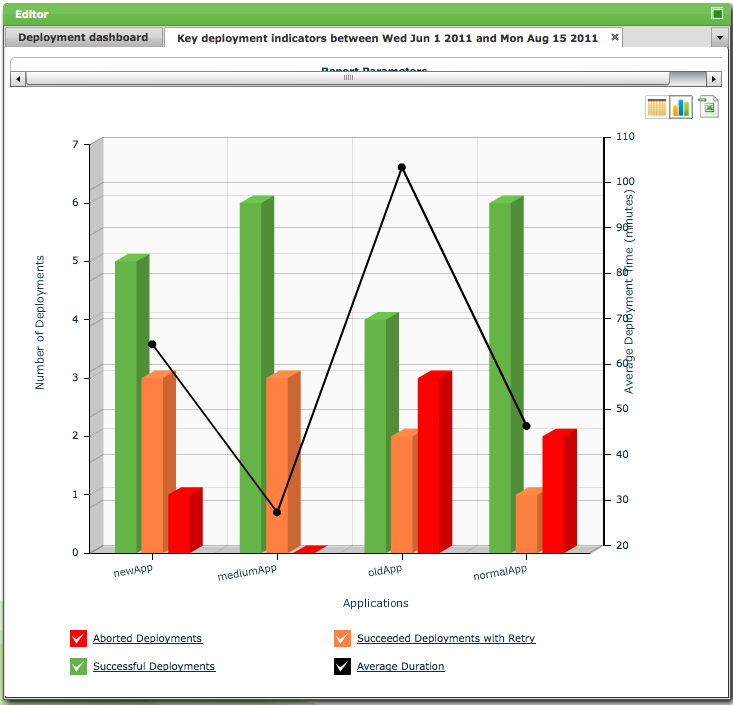
The chart shows the selected applications on the x-axis. The chart has two y-axis -- the left y-axis shows the number of deployments (successful, retried and aborted) and the right y-axis shows the average deployment time.
Key Deployment Indicators aggregated by selected environments. This shows aggregated report of deployments done on selected environments in a date range.
It is shown on selecting "Environment" option in "Aggregate By" list. It has a grid and a chart view. Following is an example of such a report:
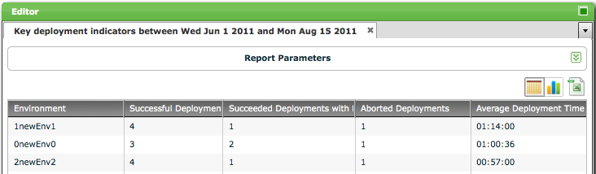\
The report shows the following columns:
The chart shows the selected environments on the x-axis. This chart has two y-axis. Left y-Axis shows the number of deployments (successful, failed and aborted), and the right y-axis shows the average deployment time on the environments.
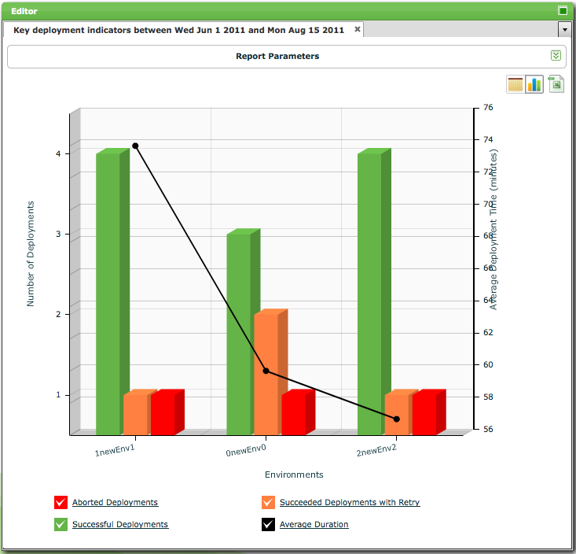
If you want to reuse data from Deployit in your own reporting, the report data can be download as a CSV file using the "Export to CSV" button on the top right of the report:
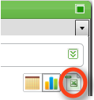
The Admin Screen is used to maintain security roles and global permissions in Deployit. For more information about Deployit security, see the Reference Manual and System Administration Manual.
The global permissions tab is used to assign global permissions to roles. The following screenshot shows an example of the global permissions tab:

The table displays, for each role, which global permissions are assigned to it. If a permission is assigned to the role, a check mark is shown. If the permission is not assigned, a dot is shown.
To add a role and assign permissions to it, select it from the dropdown list in the bottom-left corner of the table. Click on a dot or check mark to assign or unassign the permission to the role.
Note that changes made to the global permissions table are not stored until you press the Save button.
The roles tab is used to create and maintain roles in Deployit. The following screenshot shows an example of the roles tab:

The table displays which principals are member of the role. Principles are entered as a comma-separated list.